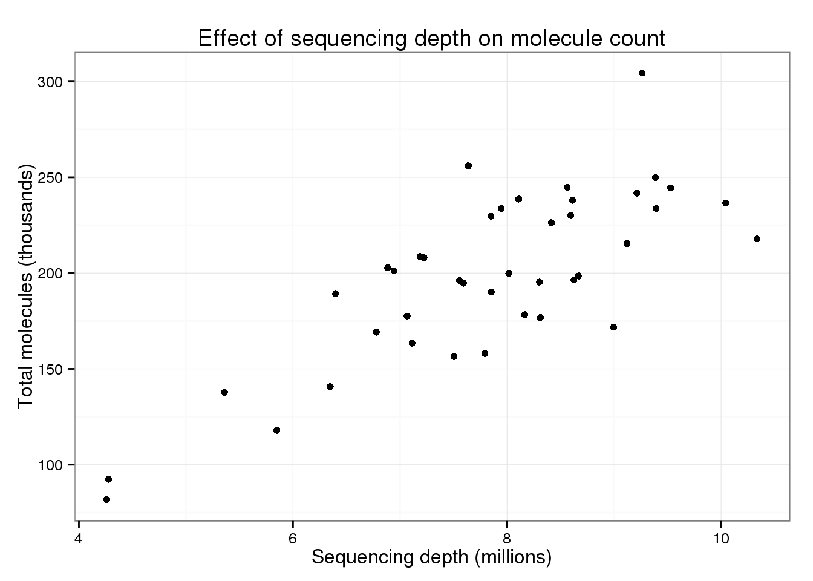
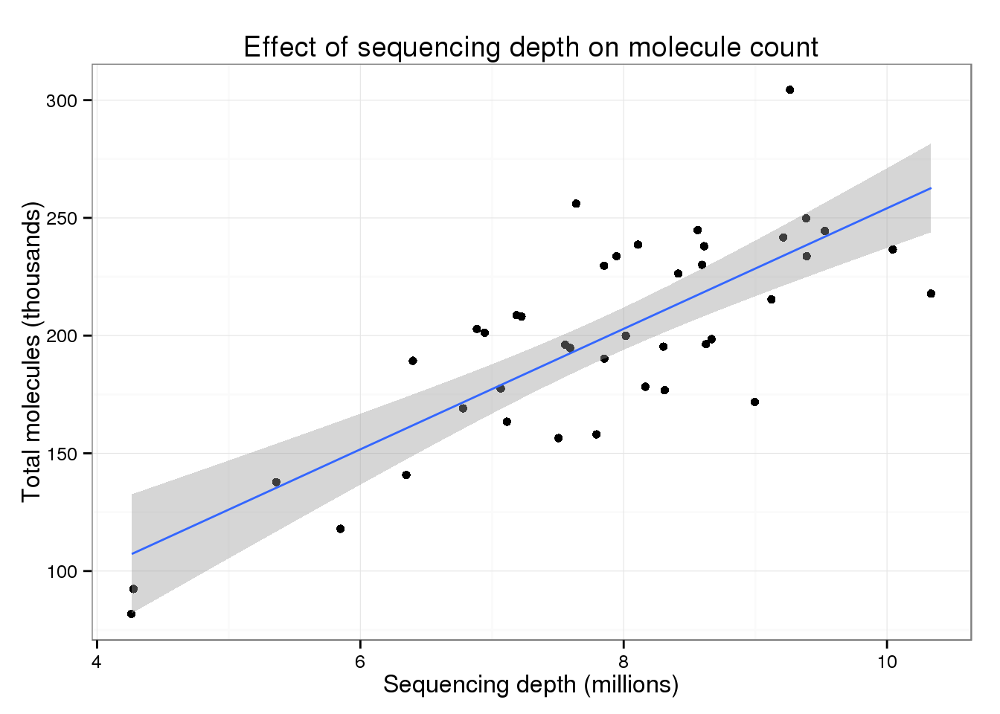

Last updated: 2015-10-01
Code version: 0a8ae478de84ce46ed5572c0b2b85e3337f3f71c
The first half of the analysis is the data cleaning steps performed in Vallejos et al., 2015 to reproduce the steps performed in Islam et al., 2014. In the second half I compare the total molecule counts from this clean data to the sequencing depth per sample to determine if there is still a relationship between sequencing depth and total molecule count.
This document shows the code used when illustrating the use of BASiCS by analysing the mouse ESC dataset described in Islam et al (2014)1. To start the analysis, the following data must be dowloaded and stored in data.path directory.
Expression counts. File ‘GSE46980_CombinedMoleculeCounts.tab’ from Series GSE46980.
Quality control information. File ‘187_3lanes_CA.txt’ (provided by Sten Linnarson).
Input molecules of spike-in genes. File ‘SilverBulletCTRLConc.txt’ (provided by Sten Linnarson).
List of highly variable genes detected by Islam et al (2014). Supplementary Table 1 (noisy genes) in Islam et al (2014)
# Here, we stored the 3 files mentioned above in the current R working directory
# Change this path as necessary
#setwd("/Users/catalinavallejos/Documents/MRC/Projects/SCE/LaTeX/BASiCS/AnalysisMouseESC/")
# data.path = getwd()
data.path = "/mnt/gluster/home/jdblischak/basics/AnalysisMouseESC"In addition, the following libraries must be loaded before performing the analysis
#################################
# REQUIRED LIBRARIES ############
#################################
library(BASiCS) # To perform BASiCS analysis
# Please ignore the message 'No methods found in "BiocGenerics" for requests: displayTechIndicator, displaySpikeInput'
# BASiCS only needs to import the generic functions, not the associated methods.
#################################
# OPTIONAL LIBRARIES ############
#################################
library(data.table) # For fast pre-processing of large datasets. Can be replaced by standard 'data.frame' objects# Matrix of expression counts (ignoring metadata)
Counts <- fread(paste0(data.path,"/GSE46980_CombinedMoleculeCounts.tab"),skip=6,drop=c("Chr","Pos","Strand","TrLen","MinExonHits","ExonHits"))
Cells <- as.vector(t(read.table(paste0(data.path,"/GSE46980_CombinedMoleculeCounts.tab"),skip=5, nrows = 1, header = F)[-1]))
SpikesInfo <- fread(paste0(data.path,"/SilverBulletCTRLConc.txt"), select=c("ERCC_ID","Name","molecules_in_each_chamber"))Counts is the matrix of expression counts. The first column in Counts contains the identifiers for each of the 25914 transcripts and the remaining columns contain the observed expression counts for each of the 96 cells in the sample.
Cells contains cell identifiers for each of the 96 cells in the sample. These identifiers are required in order to combine the quality control information.
SpikesInfo contains the input molecules that were added to the cell’s lysis (for each of the 92 spike-in genes)
The first step is to fix the format of genes and cells’ identifiers:
# Cell identifiers
setnames(Counts,names(Counts),c("Name",Cells))
# Gene identifiers
# ERCC identifiers must start with 'ERCC' (required to combine with the information about input molecules)
setkey(Counts,Name); setkey(SpikesInfo,Name)
Counts <- merge(Counts,SpikesInfo,all=TRUE)
# Creating a variable containing gene names (including ERCC names)
Counts$Name <- ifelse(is.na(Counts$ERCC_ID),Counts$Name,Counts$ERCC_ID)
# Excluding 4 spike-in genes that are not part of the ERCC molecules.
Counts <- Counts[-grep("SPIKE",Counts$Name)]
# Removing a column which is no longer required
Counts=Counts[,ERCC_ID:=NULL] Current processed data contains 25910 genes and 96 cells. The next step is to remove those cells that did not pass the quality control criteria employed by Islam et al (2014).
QC_Info <- fread(paste0(data.path,"/187_3lanes_CA.txt"))
GoodCells=QC_Info$Well[QC_Info$GoodCell==1]
# 9 other cells deleted as possible MEF (information provided by Sten Linnarson)
MEF=c("D02", "E02", "A06", "H07", "D08", "A09", "G10", "F12", "G12")
GoodCells=GoodCells[!(GoodCells %in% MEF)]
Counts <- subset(Counts, select = c("Name",GoodCells,"molecules_in_each_chamber"))Current processed data contains 25910 genes and 41 cells. The next step is to remove those transcrips that are very lowly expressed.
GenesIDs <- Counts$Name
# Fixing a gene name that was missinterpreted by excel...
GenesIDs[GenesIDs=="1-Sep"]="Sept1"
SpikesInput <- Counts$molecules_in_each_chamber
Counts = Counts[, Name := NULL]
Counts = Counts[, molecules_in_each_chamber := NULL]
SumByGene = rowSums(Counts)
GenesInclude = I(SumByGene>=41)
CountsQC = as.matrix(Counts[GenesInclude,])
GenesQC.IDs = GenesIDs[GenesInclude]
SpikesInputQC = SpikesInput[GenesInclude]
# Fixing a gene name that was missinterpreted by excel...
GenesQC.IDs[GenesQC.IDs=="1-Sep"]="Sept1"
# Creating and identifier of spike-in genes
TechQC=ifelse(1:nrow(CountsQC) %in% grep("ERCC",GenesQC.IDs),T,F)Current processed data contains 7941 genes and 41 cells. Finally, we need to re-arrange the data such that the expression counts are at the bottom of the table.
CountsQC=rbind(CountsQC[!TechQC,],CountsQC[TechQC,])
GenesQC.IDs=c(GenesQC.IDs[!TechQC],GenesQC.IDs[TechQC])
SpikesInputQC = c(SpikesInputQC[!TechQC],SpikesInputQC[TechQC])
TechQC=c(TechQC[!TechQC],TechQC[TechQC])
SpikesInputQC = SpikesInputQC[TechQC]
n = ncol(CountsQC) # Number of cells
q = nrow(CountsQC) # Total number of genes
q.bio = q - sum(TechQC) # Number of intrinsic genesFinal processed data contains 7941 genes (7895 biological and 46 spike-in) and 41 cells.
Is there still an effect of sequencing depth on total molecule counts using the cleaned data? Import the total reads that were previously counted from the raw fastq files.
islam_total_reads_file <- "../data/islam-2014-total-reads.txt"
total_reads_df <- read.table(islam_total_reads_file, stringsAsFactors = FALSE)
colnames(total_reads_df) <- c("cell", "total_reads")
total_reads <- total_reads_df$total_reads
# names(total_reads) <- total_reads_df$cellThey used the well as the identifiers. Luckily since the columns were organized by well, I can easily add them. The counting iterates by column first (numbers) and the row (letters), e.g. “A01, B01, C01,…, F12, G12, H12”.
names(total_reads) <- sprintf("%s%02d", LETTERS[1:8], rep(1:12, each = 8))Calculate the total molecules counts.
total_molecules <- colSums(CountsQC)Filter the total reads using the well ID.
total_reads <- total_reads[names(total_reads) %in% names(total_molecules)]
stopifnot(names(total_molecules) == names(total_reads),
length(total_molecules) == length(total_reads))
total_counts <- data.frame(cell = names(total_reads), total_reads, total_molecules,
stringsAsFactors = FALSE)To make the plots more easily interpretable, I scale the total number of molecules by 103 and the total number of reads by 106.
total_counts$total_reads <- total_counts$total_reads / 10^6
total_counts$total_molecules <- total_counts$total_molecules / 10^3Plotting the sequencing depth versus the total number of molecules per sample.
library("ggplot2")
theme_set(theme_bw(base_size = 12))
p_conv <- ggplot(total_counts, aes(x = total_reads, y = total_molecules)) +
geom_point() +
labs(x = "Sequencing depth (millions)",
y = "Total molecules (thousands)",
title = "Effect of sequencing depth on molecule count")
p_conv
There is still a trend of more total molecules with increasing sequencing depth.
p_conv + geom_smooth(method = "lm")
model_conv <- lm(total_molecules ~ total_reads, data = total_counts)
summary(model_conv)
Call:
lm(formula = total_molecules ~ total_reads, data = total_counts)
Residuals:
Min 1Q Median 3Q Max
-56.635 -19.889 -1.527 25.020 69.063
Coefficients:
Estimate Std. Error t value Pr(>|t|)
(Intercept) -1.896 26.053 -0.073 0.942
total_reads 25.598 3.277 7.811 1.7e-09 ***
---
Signif. codes: 0 '***' 0.001 '**' 0.01 '*' 0.05 '.' 0.1 ' ' 1
Residual standard error: 28.3 on 39 degrees of freedom
Multiple R-squared: 0.61, Adjusted R-squared: 0.6
F-statistic: 61 on 1 and 39 DF, p-value: 1.698e-09For every additional 1 million raw reads, a sample has ~25.6 thousand more molecules.
sessionInfo()R version 3.2.0 (2015-04-16)
Platform: x86_64-unknown-linux-gnu (64-bit)
locale:
[1] LC_CTYPE=en_US.UTF-8 LC_NUMERIC=C
[3] LC_TIME=en_US.UTF-8 LC_COLLATE=en_US.UTF-8
[5] LC_MONETARY=en_US.UTF-8 LC_MESSAGES=en_US.UTF-8
[7] LC_PAPER=en_US.UTF-8 LC_NAME=C
[9] LC_ADDRESS=C LC_TELEPHONE=C
[11] LC_MEASUREMENT=en_US.UTF-8 LC_IDENTIFICATION=C
attached base packages:
[1] stats graphics grDevices utils datasets methods base
other attached packages:
[1] ggplot2_1.0.1 data.table_1.9.4 BASiCS_0.3.0 knitr_1.10.5
loaded via a namespace (and not attached):
[1] Rcpp_0.12.0 magrittr_1.5 MASS_7.3-40
[4] BiocGenerics_0.14.0 munsell_0.4.2 colorspace_1.2-6
[7] lattice_0.20-31 stringr_1.0.0 httr_0.6.1
[10] plyr_1.8.3 tools_3.2.0 parallel_3.2.0
[13] grid_3.2.0 gtable_0.1.2 coda_0.17-1
[16] htmltools_0.2.6 yaml_2.1.13 digest_0.6.8
[19] reshape2_1.4.1 formatR_1.2 bitops_1.0-6
[22] RCurl_1.95-4.6 evaluate_0.7 rmarkdown_0.6.1
[25] labeling_0.3 stringi_0.4-1 scales_0.2.4
[28] chron_2.3-45 proto_0.3-10 Islam et al (2014). Quantitative single-cell RNA-seq with unique molecular identifiers. Nature Methods 11: 163-166.↩